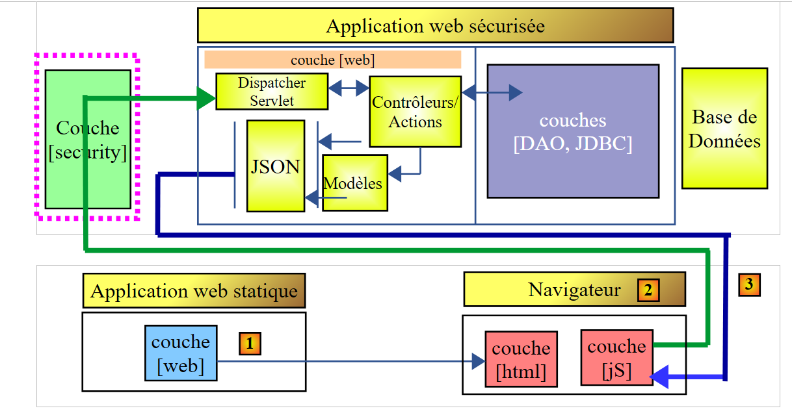
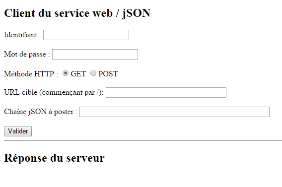
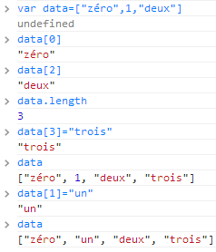
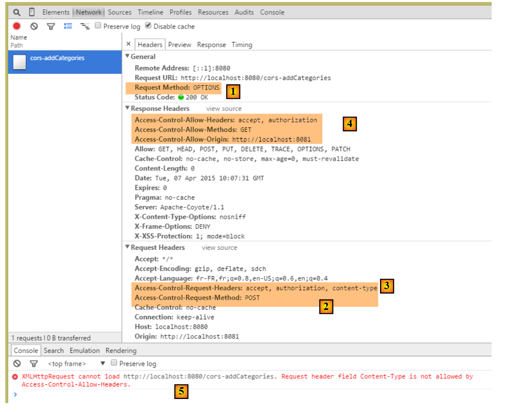

18. [Cours]: Beheer van domeinoverstijgende toegang
Sleutelwoorden: CORS (Cross-Origin Resource Sharing).
Dit hoofdstuk wijkt enigszins af van TD. Het is behouden omdat het een inleiding biedt tot webprogrammering en JavaScript-programmering. We moeten hier niet vergeten dat een van de doelstellingen van dit TD is om de concepten te presenteren die vaak worden gebruikt bij de ontwikkeling van JEE, d.w.z. webontwikkeling op basis van Java-frameworks. Hier wordt de webserver aangevuld die wordt gebruikt in de studie van de product- en categoriedatabase, zodat deze verzoeken tussen domeinen kan accepteren.
In het document [Tutoriel AngularJS / Spring 4] wordt een client/server-toepassing ontwikkeld waarbij de client een AngularJS-toepassing is:
 |
- de pagina’s HTML / CSS / JS van de Angular-toepassing zijn afkomstig van de server [1];
- in [2] doet de service [dao] een verzoek aan een andere server, namelijk de server [2]. Welnu, dat wordt verboden door de browser die de Angular-applicatie uitvoert, omdat het een beveiligingslek is. De applicatie mag alleen de server opvragen waarvan ze afkomstig is, d.w.z. de server [1];
Het is eigenlijk niet juist om te zeggen dat de browser de Angular-applicatie verbiedt om de server [2] te benaderen. De applicatie benadert de server juist om te vragen of deze toestaat dat een client die niet van dezelfde oorsprong is, de server benadert. Deze techniek voor het delen van bronnen wordt CORS (Cross-Origin Resource Sharing) genoemd. De server [2] geeft toestemming door specifieke HTTP-headers te verzenden.
We gaan de volgende architectuur opzetten:
 |
- in [1] levert een webapplicatie de pagina’s HTML / jS;
- in [2] voert de browser het in de pagina’s HTML ingebedde JavaScript uit om de beveiligde webservice [3] te raadplegen;
18.1. Support
 |
De projecten van dit hoofdstuk zijn te vinden in de map [support / chap-18].
18.2. Het project van de klant
We maken het volgende Eclipse-project aan:
 |
18.3. Maven-configuratie
Het project is een Maven-project met het volgende bestand: [pom.xml]:
<project xmlns="http://maven.apache.org/POM/4.0.0" xmlns:xsi="http://www.w3.org/2001/XMLSchema-instance"
xsi:schemaLocation="http://maven.apache.org/POM/4.0.0 http://maven.apache.org/xsd/maven-4.0.0.xsd">
<modelVersion>4.0.0</modelVersion>
<groupId>istia.st.webjson</groupId>
<artifactId>intro-server-webjson-01</artifactId>
<version>0.0.1-SNAPSHOT</version>
<name>intro-server-webjson-01</name>
<description>démo spring mvc</description>
<parent>
<groupId>org.springframework.boot</groupId>
<artifactId>spring-boot-starter-parent</artifactId>
<version>1.2.7.RELEASE</version>
</parent>
<dependencies>
<dependency>
<groupId>istia.st.springdata</groupId>
<artifactId>intro-spring-data-01</artifactId>
<version>0.0.1-SNAPSHOT</version>
</dependency>
<dependency>
<groupId>org.springframework.boot</groupId>
<artifactId>spring-boot-starter-web</artifactId>
</dependency>
</dependencies>
<build>
<plugins>
<plugin>
<groupId>org.springframework.boot</groupId>
<artifactId>spring-boot-maven-plugin</artifactId>
</plugin>
<plugin>
<groupId>org.apache.maven.plugins</groupId>
<artifactId>maven-surefire-plugin</artifactId>
<version>2.18.1</version>
</plugin>
</plugins>
</build>
</project>
- regels 11-15: dit is een Spring Boot-project;
- regels 23-26: er wordt gebruikgemaakt van de afhankelijkheid [spring-boot-starter-web], die een Tomcat-server en Spring MVC meebrengt;
18.4. Spring-configuratie
 |
De klasse [WebConfig] die het Spring-project configureert, ziet er als volgt uit:
package spring.cors.client.config;
import org.springframework.beans.factory.annotation.Autowired;
import org.springframework.boot.context.embedded.EmbeddedServletContainerFactory;
import org.springframework.boot.context.embedded.ServletRegistrationBean;
import org.springframework.boot.context.embedded.tomcat.TomcatEmbeddedServletContainerFactory;
import org.springframework.context.ApplicationContext;
import org.springframework.context.annotation.Bean;
import org.springframework.web.context.WebApplicationContext;
import org.springframework.web.servlet.DispatcherServlet;
import org.springframework.web.servlet.config.annotation.EnableWebMvc;
import org.springframework.web.servlet.config.annotation.ResourceHandlerRegistry;
import org.springframework.web.servlet.config.annotation.WebMvcConfigurerAdapter;
@EnableWebMvc
public class WebConfig extends WebMvcConfigurerAdapter {
// -------------------------------- configuratie van de [web]-laag
@Autowired
private ApplicationContext context;
@Bean
public DispatcherServlet dispatcherServlet() {
DispatcherServlet servlet = new DispatcherServlet((WebApplicationContext) context);
return servlet;
}
@Bean
public ServletRegistrationBean servletRegistrationBean(DispatcherServlet dispatcherServlet) {
return new ServletRegistrationBean(dispatcherServlet, "/*");
}
@Bean
public EmbeddedServletContainerFactory embeddedServletContainerFactory() {
return new TomcatEmbeddedServletContainerFactory("", 8081);
}
@Override
public void addResourceHandlers(ResourceHandlerRegistry registry) {
registry.addResourceHandler("/*.html").addResourceLocations("classpath:/static/");
registry.addResourceHandler("/*.js").addResourceLocations("classpath:/static/js/");
}
}
- regel 15: de klasse configureert een Spring-project MVC;
- regel 16: de klasse is een uitbreiding van de klasse [WebMvcConfigurerAdapter] om enkele van haar methoden opnieuw te definiëren;
- regels 18-36: we zijn deze beans al tegengekomen, bijvoorbeeld in paragraaf 13.5.3.1. Merk op, regel 35, dat de webservice op poort 8081 zal draaien;
- regels 38-42: met de methode [addResourceHandlers] kunnen statische bronnen worden gedefinieerd, d.w.z. bronnen die niet worden verwerkt door de methode [DispatcherServlet] uit regel 23;
- regel 40: elk verzoek om een bron met de extensie .html levert als antwoord het bestand op dat in het verzoek is gevraagd en dat zich bevindt in de map [static] van de Classpath van het project;
- regel 41: elke aanvraag voor een bron met de extensie .js levert als antwoord het JavaScript-bestand op dat in de aanvraag is gevraagd en dat zich bevindt in de map [static/js] van de classpath van het project;
 |
18.5. Basisbegrippen van jQuery en JavaScript
De pagina HTML van de client ziet er als volgt uit:
 |
Deze bevat JavaScript-code (jS) die in de browser wordt uitgevoerd. We zullen enkele basisbegrippen van JavaScript bespreken die ons helpen de code te begrijpen. De client zal HTTP-aanroepen doen met behulp van de bibliotheek jQuery [https://jquery.com/], die talrijke functies biedt die de ontwikkeling van JavaScript vergemakkelijken. We maken een statisch bestand HTML [jQuery.html] aan dat we in de map [static] plaatsen:
 |
Dit bestand heeft de volgende inhoud:
<!DOCTYPE html>
<html xmlns="http://www.w3.org/1999/xhtml">
<head>
<meta http-equiv="Content-Type" content="text/html; charset=utf-8" />
<title>JQuery-01</title>
<script type="text/javascript" src="/jquery-2.1.3.min.js"></script>
</head>
<body>
<h3>Rudiments de JQuery</h3>
<div id="element1">Elément 1</div>
</body>
</html>
- regel 6: import van jQuery;
- regels 10-12: een element van de pagina met id [element1]. We gaan met dit element aan de slag.
We moeten het bestand [jquery-2.1.3.min.js] downloaden. De nieuwste versie van jQuery is te vinden op URL [http://jquery.com/download/]:

We plaatsen het gedownloade bestand in de map [static / js] en passen regel 6 van het bestand HTML aan op basis van de geïnstalleerde versie.
Vervolgens roepen we de statische weergave [jQuery.html] op met Chrome [1-2]:
 |
Gebruik in Google Chrome [Ctrl-Maj-I] om de ontwikkeltools [3] weer te geven. Via het tabblad [Console] [4] kunt u JavaScript-code uitvoeren. Hieronder geven we enkele JavaScript-opdrachten die u kunt invoeren, samen met een uitleg.
|
: genereert de verzameling van alle elementen met de id [element1], dus normaal gesproken een verzameling van 0 of 1 element omdat er op een pagina HTML geen twee identieke id's kunnen voorkomen. |  |
|
: wijst de tekst [blabla] toe aan alle elementen in de verzameling. Dit heeft tot gevolg dat de weergave van de pagina |  |
|
verbergt de elementen van de collectie. De tekst [blabla] wordt niet meer weergegeven. |  |
|
: toont de collectie weer. Hierdoor kunnen we zien dat het element met id [element1] het attribuut CSS style='display: none;', waardoor ervoor zorgt dat het element verborgen is. | |
|
: toont de elementen van de verzameling. De tekst [blabla] verschijnt weer. Het is het attribuut CSS style='display: block;' dat zorgt voor deze weergave. |  |
|
: stelt een attribuut in voor alle elementen van de verzameling. Het attribuut is hier [style] en de waarde ervan [color: red]. De tekst [blabla] wordt rood weergegeven. |  |
 | |
 |
Merk op dat de URL van de browser tijdens al deze bewerkingen niet is veranderd. Er heeft geen communicatie met de webserver plaatsgevonden. Alles gebeurt binnen de browser. Laten we nu de broncode van de pagina bekijken:
 |  |
Dit is de oorspronkelijke tekst. Deze geeft op geen enkele manier de bewerkingen weer die we op het element in de regels 10-12 hebben uitgevoerd. Het is belangrijk om dit in gedachten te houden bij het debuggen van JavaScript. Het is dan vaak zinloos om de broncode van de weergegeven pagina te bekijken.
18.6. De JavaScript-code van de applicatie
Laten we teruggaan naar de pagina van de clienttoepassing die de webservice / jSON gaat opvragen:
 |
 |
De code HTML van deze pagina is als volgt:
<!DOCTYPE html>
<html>
<head>
<meta charset="UTF-8">
<title>Spring MVC</title>
<script type="text/javascript" src="/jquery-2.1.3.min.js"></script>
<script type="text/javascript" src="/client.js"></script>
</head>
<body>
<h2>Client du service web / jSON</h2>
<form id="formulaire">
<!-- gebruikersnaam -->
Identifiant :
<!-- -->
<input type="text" id="identifiant" name="identifiant" value="" />
<!-- wachtwoord -->
<br /> <br /> Mot de passe :
<!-- -->
<input type="text" id="password" name="password" value="" />
<!-- methode HTTP -->
<br /> <br /> Méthode HTTP :
<!-- -->
<input type="radio" id="get" name="method" value="get"
checked="checked" />GET
<!-- -->
<input type="radio" id="post" name="method" value="post" />POST
<!-- URL -->
<br /> <br />URL cible (commençant par /): <input type="text"
id="url" size="30"><br />
<!-- geplaatste waarde -->
<br /> Chaîne jSON à poster : <input type="text" id="posted"
size="50" />
<!-- bevestigingsknop -->
<br /> <br /> <input type="button" value="Valider"
onclick="javascript:requestServer()"></input>
</form>
<hr />
<h2>Réponse du serveur</h2>
<div id="response"></div>
</body>
</html>
- regel 6: we importeren de bibliotheek jQuery;
- regel 7: er wordt een code geïmporteerd die we gaan schrijven;
- regels 15, 19, 26, 29, 31: noteer de [id]-identificaties van de componenten van de pagina. Het JavaScript verwijst naar deze componenten via deze identificaties;
De code [client.js] is als volgt:
// algemene gegevens
var url;
var posted;
var response;
var method;
var baseUrl = 'http://localhost:8080';
var identifiant;
var password;
var authorizationHeader;
function requestServer() {
// de gegevens worden opgehaald
var urlValue = url.val();
var postedValue = posted.val();
var identifiantValue = identifiant.val();
var passwordValue = password.val();
var method = document.forms[0].elements['method'].value;
authorizationCode = btoa(identifiantValue + ':' + passwordValue);
// het vorige antwoord wordt gewist
response.text("");
// we voeren handmatig een Ajax-aanroep uit
if (method === "get") {
doGet(urlValue);
} else {
doPost(urlValue, postedValue);
}
}
function doGet(url) {
// we voeren handmatig een Ajax-aanroep uit
$.ajax({
headers : {
'Authorization':'Basic '+authorizationCode
},
url : baseUrl + url,
type : 'GET',
dataType : 'text',
beforeSend : function() {
},
success : function(data) {
// tekstresultaat
response.text(data);
},
complete : function() {
},
error : function(jqXHR) {
// systeemfout
response.text(JSON.stringify(jqXHR.statusCode()));
}
})
}
function doPost(url, posted) {
// er wordt handmatig een Ajax-aanroep gedaan
$.ajax({
headers : {
'Authorization':'Basic '+authorizationCode
},
url : baseUrl + url,
type : 'POST',
contentType : 'application/json; charset=UTF-8',
data : posted,
dataType : 'text',
beforeSend : function() {
},
success : function(data) {
// tekstresultaat
response.text(data);
},
complete : function() {
},
error : function(jqXHR) {
// systeemfout
response.text(JSON.stringify(jqXHR.statusCode()));
}
})
}
// bij het laden van het document
$(document).ready(function() {
// we halen de referenties van de componenten van de pagina op
identifiant = $("#identifiant");
password = $("#password");
url = $("#url");
posted = $("#posted");
response = $("#response");
});
- regels 80-87: de code jS die wordt uitgevoerd zodra het document volledig in de browser is geladen;
- regels 81-86: de verwijzingen naar de verschillende elementen van het document HTML worden opgehaald via hun identificatiecode [id];
- regels 2-9: globale variabelen die bekend zijn in alle functies die zijn gedefinieerd in het bestand jS;
- regel 13: de door de gebruiker ingevoerde URL wordt opgehaald;
- regel 14: de waarde die de gebruiker wil plaatsen wordt opgehaald (leeg bij bewerking GET);
- regel 15: de door de gebruiker ingevoerde gebruikersnaam wordt opgehaald;
- regel 16: we halen zijn wachtwoord op;
- regel 17: we halen de methode [get] of [post] op die moet worden gebruikt om de URL van regel 9 op te vragen:
- [document] verwijst naar het document dat door de browser is geladen, ook wel het DOM (Document Object Model) genoemd,
- [document.forms[0]] verwijst naar het eerste formulier van het document; een document kan er meerdere bevatten. Hier is er slechts één,
- [document.forms[0].elements['method']] verwijst naar het element van het formulier dat het attribuut [name='method'] heeft. Er zijn er twee:
<input type="radio" id="get" name="method" value="get" checked="checked" />GET
<input type="radio" id="post" name="method" value="post" />POST
- (vervolg)
- [document.forms[0].elements['method'].value] is de waarde die wordt verzonden voor de component met het attribuut [name='method']. We weten dat de verzonden waarde de waarde is van het attribuut [value] van de aangevinkte keuzeknop. In dit geval zal dat dus een van de tekenreeksen ['get', 'post'] zijn;
- regel 18: we genereren de Base74-codering van de tekenreeks ‘identifiant:password’. Deze gecodeerde tekenreeks wordt gebruikt in de header HTTP [Authorization] die we naar de server sturen om het verzoek te authenticeren;
- regels 22-26: afhankelijk van de te gebruiken methode HTTP, voeren we de methode [doGet] of [doPost] uit;
- de methode jQuery [$.ajax] voert een aanroep HTTP uit;
- regels 32-34: er wordt verbinding gemaakt met een server die een header HTTP of [Authorization: Basic code] vereist;
- regel 35: de gebruiker voert URL in van het type [/cors-getAllCategories,/cors-addProduits, ...]. Deze URL moeten dus worden aangevuld met de URL van de server uit regel 6;
- regel 36: te gebruiken methode HTTP;
- regel 37: de server stuurt jSON terug. We geven het type [text] op als resultaattype om het weer te geven zoals het is ontvangen;
- regel 42: weergave van het tekstantwoord van de server;
- regels 48-49: weergave van een eventuele foutmelding;
- regel 53: de methode [doPost] ontvangt een tweede parameter, namelijk de waarde die moet worden verzonden;
- regel 61: om aan te geven dat de verzonden waarde de vorm van een tekenreeks jSON zal hebben;
18.7. Uitvoering van de client
De clienttoepassing is een Spring Boot-toepassing die wordt gestart door de volgende uitvoerbare klasse [Boot]:
 |
package spring.cors.client.boot;
import org.springframework.boot.SpringApplication;
import spring.cors.client.config.WebConfig;
public class Boot {
public static void main(String[] args) {
SpringApplication.run(WebConfig.class, args);
}
}
- regel 10: de methode [SpringApplication.run] maakt gebruik van het configuratiebestand [WebConfig]. De pagina [client.html] wordt geïmplementeerd op de Tomcat-server die zich in het classpath van het project bevindt;
18.8. De URL [/getAllCategories]
We starten:
- de web-/json-server op poort 8080;
- de client van deze server op poort 8081;
en vervolgens vragen we de URL [http://localhost:8081/client.html] [1] op:
 |
- in [2], voeren we een GET uit op de URL [http://localhost:8080/getAllCategories];
We krijgen geen reactie van de server. Als we naar de ontwikkelingsconsole van Chrome kijken (Ctrl-Shift-I), zien we een foutmelding:
 |
- in [1] bevinden we ons in het tabblad [Network];
- in [2] zien we dat het verzoek HTTP dat is gedaan niet [GET] is, maar [OPTIONS]. Bij een verzoek tussen domeinen controleert de browser bij de server of aan een aantal voorwaarden is voldaan door een verzoek HTTP [OPTIONS] te verzenden. In dit geval zijn de verzoeken die worden aangeduid door de stippen [5-6];
- in [5] vraagt de browser of het doel URL bereikbaar is via een GET. De header van het verzoek [Access-Control-Request-Method] vraagt om een antwoord met een header HTTP [Access-Control-Allow-Methods] waarin wordt aangegeven dat de gevraagde methode wordt geaccepteerd;
- in [6] verstuurt de browser de header HTTP [Origin: http://localhost:8081]. Deze header vraagt om een antwoord in de vorm van een header HTTP [Access-Control-Allow-Origin] waarin wordt aangegeven dat de opgegeven bron wordt geaccepteerd;
- in [7] vraagt de browser of de headers HTTP, [accept] en [authorization] worden geaccepteerd. De header van het verzoek [Access-Control-Request-Headers] verwacht een antwoord met een header HTTP [Access-Control-Allow-Headers] waarin wordt aangegeven dat de gevraagde headers worden geaccepteerd;
- er treedt een fout op in [3]. Als je op het pictogram klikt, krijg je de foutmelding [4];
- in [4] geeft het bericht aan dat de server de header HTTP [Access-Control-Allow-Origin] niet heeft verzonden, die aangeeft of de herkomst van het verzoek wordt geaccepteerd;
- in [8] is te zien dat de server deze header inderdaad niet heeft verzonden. Daardoor heeft de browser geweigerd het aanvankelijk gevraagde verzoek HTTP GET uit te voeren;
We moeten de webserver aanpassen / jSON.
18.9. De nieuwe webservice / json
We maken een nieuw Maven-project [intro-spring-cors-server-jpa] aan:
 |  |
18.9.1. Maven-configuratie
De Maven-configuratie van de nieuwe webservice is als volgt:
<project xmlns="http://maven.apache.org/POM/4.0.0" xmlns:xsi="http://www.w3.org/2001/XMLSchema-instance"
xsi:schemaLocation="http://maven.apache.org/POM/4.0.0 http://maven.apache.org/xsd/maven-4.0.0.xsd">
<modelVersion>4.0.0</modelVersion>
<groupId>istia.st.cors</groupId>
<artifactId>spring-cors-server-jpa</artifactId>
<version>0.0.1-SNAPSHOT</version>
<name>spring-cors-server-jpa</name>
<description>démo spring cors</description>
<properties>
<project.build.sourceEncoding>UTF-8</project.build.sourceEncoding>
<java.version>1.8</java.version>
</properties>
<parent>
<groupId>org.springframework.boot</groupId>
<artifactId>spring-boot-starter-parent</artifactId>
<version>1.2.7.RELEASE</version>
</parent>
<dependencies>
<dependency>
<groupId>istia.st.spring.security</groupId>
<artifactId>intro-spring-security-server-01</artifactId>
<version>0.0.1-SNAPSHOT</version>
</dependency>
</dependencies>
<!-- plug-ins -->
<build>
<plugins>
<plugin>
<groupId>org.springframework.boot</groupId>
<artifactId>spring-boot-maven-plugin</artifactId>
</plugin>
<plugin>
<groupId>org.apache.maven.plugins</groupId>
<artifactId>maven-surefire-plugin</artifactId>
<version>2.18.1</version>
</plugin>
</plugins>
</build>
</project>
- regels 23-27: we maken gebruik van alles wat tot nu toe is bereikt, op basis van het beveiligde /json-archief van de webserver;
18.9.2. Spring-configuratie
De configuratieklasse [AppConfig] ziet er als volgt uit:
 |
package spring.cors.server.config;
import org.springframework.context.annotation.Bean;
import org.springframework.context.annotation.ComponentScan;
import org.springframework.context.annotation.Configuration;
import org.springframework.context.annotation.Import;
import spring.security.config.SecurityConfig;
@Configuration
@ComponentScan(basePackages = { "spring.cors.server.service" })
@Import({ SecurityConfig.class })
public class AppConfig {
// verzoeken tussen domeinen
@Bean
public boolean isCorsEnabled() {
return true;
}
}
- regel 10: de klasse is een Spring-configuratieklasse;
- regel 11: andere Spring-componenten zijn te vinden in het pakket [spring.cors.server.service];
- regels 16-19: we maken een Spring-component aan met de naam [isCorsEnabled] die aangeeft of clients van buiten het domein van de server worden geaccepteerd of niet;
18.9.3. De klasse [AbstractCorsController]
De klasse [AbstractCorsController], die de bovenliggende klasse zal zijn voor alle controllers van deze applicatie:
 |
De code hiervan is als volgt:
package spring.cors.server.service;
import javax.servlet.http.HttpServletResponse;
import org.springframework.beans.factory.annotation.Autowired;
public abstract class AbstractCorsController {
@Autowired
private boolean isCorsEnabled;
// opties naar de client verzenden
public void setHeaders(String origin, HttpServletResponse response) {
// Cors toegestaan?
if (!isCorsEnabled || origin == null || !origin.startsWith("http://localhost")) {
return;
}
// we stellen de header CORS in
response.addHeader("Access-Control-Allow-Origin", origin);
// bepaalde headers toestaan
response.addHeader("Access-Control-Allow-Headers", "accept, authorization");
// GET wordt toegestaan
response.addHeader("Access-Control-Allow-Methods", "GET");
}
}
- regel 7: de klasse [CorsController] is abstract, omdat deze is ontworpen om te worden uitgebreid en niet om te worden geïnstantieerd;
- regels 13-24: de methode [setHeaders] voegt de headers HTTP, die vereist zijn voor verzoeken tussen domeinen, toe aan het antwoord [HttpServletResponse response] (regel 13) dat naar de client wordt gestuurd;
- regel 33: de methode [/setHeaders] accepteert als parameters:
- de tekenreeks [origin] die voorkomt in de header HTTP [Origin] van de domeinoverschrijdende verzoeken:
Hier zou de parameter [origin] op regel 13 de waarde [http://localhost:8081] hebben. Indien het verzoek de header HTTP [Origin] niet bevat, zorgen we ervoor dat we [origin==null] krijgen;
- (vervolg)
- het object [HttpServletResponse response] dat wordt teruggestuurd naar de klant die het verzoek heeft ingediend;
Deze twee parameters worden door Spring ingevoegd;
- regels 15-175: als de applicatie is geconfigureerd om cross-domain verzoeken te accepteren en als de verzender de header HTTP [Origin] heeft verzonden en als deze herkomst begint met [http://localhost], dan wordt het verzoek van een ander domein geaccepteerd, anders wordt het afgewezen;
- regel 19: als de client zich in het domein [http://localhost:port] bevindt, sturen we de header HTTP:
wat betekent dat de server de herkomst van de client accepteert;
- regel 21: we hebben twee specifieke HTTP-headers gemeld in het verzoek HTTP [OPTIONS]:
Op de header HTTP [Access-Control-Request-X] reageert de server met een header HTTP [Access-Control-Allow-X] waarin wordt aangegeven wat is toegestaan. De regels 20-23 herhalen alleen het verzoek van de client om aan te geven dat dit is geaccepteerd;
18.9.4. De controller [MyControllerWithHttpOptions]
Om te voorkomen dat we de onbeveiligde webserver / jSON [intro-server-webjson-01], die in paragraaf 13.5.3 is besproken, moeten aanpassen, gaan we een nieuwe controller maken die, op de plaatsen waar de onbeveiligde server de URL en [/url] verwerkt, zal de nieuwe controller de URL en [/cors-url] verwerken, en deze URL zal verzoeken tussen domeinen accepteren.
De klasse [MyControllerWithHttpOptions] is de controller die de verzoeken van het type [OPTIONS] met ID HTTP zal verwerken:
 |
package spring.cors.server.service;
import javax.servlet.http.HttpServletRequest;
import javax.servlet.http.HttpServletResponse;
import org.springframework.stereotype.Controller;
import org.springframework.web.bind.annotation.PathVariable;
import org.springframework.web.bind.annotation.RequestHeader;
import org.springframework.web.bind.annotation.RequestMapping;
import org.springframework.web.bind.annotation.RequestMethod;
import com.fasterxml.jackson.core.JsonProcessingException;
@Controller
public class MyControllerWithHttpOptions extends AbstractCorsController {
@RequestMapping(value = "/cors-getAllCategories", method = RequestMethod.OPTIONS)
public void getAllCategories(@RequestHeader(value = "Origin", required = false) String origin,
HttpServletResponse httpServletResponse){
// headers CORS
setHeaders(origin, httpServletResponse);
}
...
- regel 14: de klasse is een Spring-controller MVC;
- regel 15: de klasse [MyControllerWithHttpOptions] is een uitbreiding van de klasse [AbstractCorsController] die we zojuist hebben beschreven;
- regels 17-18: de methode [getAllCategories] (regel 18) verwerkt de URL ["/cors-getAllCategories"] wanneer deze wordt aangeroepen met de methode HTTP [OPTIONS];
- regel 18: de methode [getAllCategories] accepteert twee parameters:
- [@RequestHeader(value = "Origin", required = false) String origin] om de waarde van de header HTTP [Origin:http://localhost:8081] op te halen, indien deze aanwezig is. In dit voorbeeld krijgt de parameter [String origin] de waarde [http://localhost:8081]. Deze header is niet verplicht [required = false]. Als deze niet aanwezig is, krijgt de parameter [String origin] de waarde null;
- [HttpServletResponse httpServletResponse]: het antwoord dat naar de client wordt verzonden;
- regel 21: we verzenden de headers HTTP die verzoeken tussen domeinen mogelijk maken. De methode [setHeaders] is gedefinieerd in de bovenliggende klasse [AbstractCorsController];
Dit geldt voor alle URL-methoden die door de webserver worden blootgesteld / de onbeveiligde jSON-methode [intro-server-webjson-01] die in paragraaf 13.5.3 is besproken. Wanneer deze dienst de URL en [/url] beschikbaar stelt, stelt de hierboven genoemde klasse [MyControllerWithHttpOptions] de URL en [/cors-url] beschikbaar.
18.9.5. De controller [MyControllerWithCors]
 |
De klasse [MyControllerWithCors] is de controller die de verzoeken HTTP van het type [GET] en [POST] zal verwerken:
package spring.cors.server.service;
import javax.servlet.http.HttpServletRequest;
import javax.servlet.http.HttpServletResponse;
import org.springframework.beans.factory.annotation.Autowired;
import org.springframework.web.bind.annotation.PathVariable;
import org.springframework.web.bind.annotation.RequestHeader;
import org.springframework.web.bind.annotation.RequestMapping;
import org.springframework.web.bind.annotation.RequestMethod;
import org.springframework.web.bind.annotation.ResponseBody;
import com.fasterxml.jackson.core.JsonProcessingException;
import spring.webjson.service.MyController;
@Controller
public class MyControllerWithCors extends AbstractCorsController {
// Spring-afhankelijkheden
@Autowired
private MyController myController;
...
@RequestMapping(value = "/cors-getAllCategories", method = RequestMethod.GET, produces = "application/json; charset=UTF-8")
@ResponseBody
public String getAllCategories(@RequestHeader(value = "Origin", required = false) String origin,
HttpServletResponse httpServletResponse) throws JsonProcessingException {
// antwoord
return myController.getAllCategories();
}
...
- regel 17: de klasse [MyControllerWithCors] is een Spring-controller MVC
- regel 18: deze breidt de klasse [AbstractCorsController] uit;
- regels 21-22: injectie van de controller [MyController] van de webserver / de onbeveiligde jSON [intro-server-webjson-01] die in paragraaf 13.5.3 is besproken;
- regels 25-27: de methode [getAllCategories] verwerkt de URL [/cors-getAllCategories] (regel 28) wanneer deze wordt aangevraagd met de methode HTTP [GET];
- regel 26: het resultaat van de methode [getAllCategories] wordt naar de klant verzonden. Dit resultaat is een stream jSON (attribuut [produces] van regel 27 en type [String] van het resultaat op regel 25);
- regel 27: de methode ontvangt dezelfde parameters als de methode [getAllCategories] van de controller [MyControllerWithHttpOptions] die we zojuist hebben besproken;
- regel 30: de methode [myController.getAllCategories()] wordt gevraagd het antwoord te verzenden;
Uiteindelijk is het de methode [myController.getAllCategories()] van de onbeveiligde server die het antwoord verstuurt. We hebben het antwoord eenvoudigweg aangevuld met de headers die nodig zijn voor verzoeken tussen domeinen.
Dit gebeurt voor alle URL-methoden die worden aangeboden door de onbeveiligde webserver / jSON [intro-server-webjson-01] die in paragraaf 13.5.3 is besproken. Wanneer deze dienst de URL en [/url] beschikbaar stelt, stelt de hierboven genoemde klasse [MyControllerWithCors] de URL en [/cors-url] beschikbaar.
Een verzoek tussen domeinen verloopt als volgt:
- de code JS van de client vraagt deURL en [/cors-url] op met een verzoek voor HTTP, GET of POST;
- de browser die deze code uitvoert, onderschept dit verzoek en vraagt eerst deURL [/cors-url] met een verzoek HTTP OPTIONS om te controleren of de doelservice verzoeken tussen domeinen accepteert;
- een van de methoden van de controller [MyControllerWithHttpOptions] verstuurt de domeinoverschrijdende headers die de browser verwacht;
- de browser vraagt vervolgens de oorspronkelijke URL ([/cors-url]) op met een verzoek HTTP GET of een POST;
- een van de methoden van de controller [MyControllerWithCors] reageert vervolgens hierop;
18.9.6. Tests
De bootklasse van het project [intro-spring-cors-server-jpa] is als volgt:
 |
package spring.cors.server.boot;
import org.springframework.boot.SpringApplication;
import spring.cors.server.config.AppConfig;
public class Boot {
public static void main(String[] args) {
SpringApplication.run(AppConfig.class, args);
}
}
- regel 10: de statische methode [SpringApplication.run] wordt uitgevoerd met de Spring-configuratie [AppConfig]. Door deze configuratie wordt de Tomcat-server die in het projectarchief is opgenomen, gestart en wordt de webapplicatie [intro-spring-cors-server-jpa] daarop geïmplementeerd. De webapplicatie van de onbeveiligde server [intro-server-webjson-01], die deel uitmaakt van het projectarchief, wordt hier eveneens op geïmplementeerd. Aangezien het project [intro-spring-security-server-01] ook deel uitmaakt van het archief, worden uiteindelijk twee soorten URL blootgesteld:
- die van de beveiligde webservice: /url;
- die van de webservice die verzoeken van andere domeinen accepteert: /cors-url;
We zijn nu klaar voor nieuwe tests. We lanceren de nieuwe versie van de webservice en ontdekken dat het probleem nog steeds bestaat. Er is niets veranderd. Als we in regel 7 hieronder een console-uitvoer plaatsen, wordt deze nooit weergegeven, wat aantoont dat de methode [getAllCategories] van de klasse [MyControllerWithHttpOptions] nooit wordt aangeroepen;
@Controller
public class MyControllerWithHttpOptions extends AbstractCorsController {
@RequestMapping(value = "/cors-getAllCategories", method = RequestMethod.OPTIONS)
public void getAllCategories(@RequestHeader(value = "Origin", required = false) String origin,
HttpServletResponse httpServletResponse){
System.out.println(un_texte) ;
// headers CORS
setHeaders(origin, httpServletResponse);
}
Na wat onderzoek blijkt dat Spring MVC standaard zelf de opdrachten HTTP en [OPTIONS] verwerkt. Het is dus altijd Spring die reageert en nooit de methode [getAllCategories] uit regel 5 hierboven. Dit standaardgedrag van Spring MVC kan worden gewijzigd. We passen de bestaande klasse [AppConfig] aan:
 |
package spring.cors.server.config;
import javax.annotation.PostConstruct;
import org.springframework.beans.factory.annotation.Autowired;
import org.springframework.context.annotation.Bean;
import org.springframework.context.annotation.ComponentScan;
import org.springframework.context.annotation.Configuration;
import org.springframework.context.annotation.Import;
import org.springframework.web.servlet.DispatcherServlet;
import spring.security.config.SecurityConfig;
@Configuration
@ComponentScan(basePackages = { "spring.cors.server.service" })
@Import({ SecurityConfig.class })
public class AppConfig {
// verzoeken tussen domeinen
@Bean
public boolean isCorsEnabled() {
return true;
}
@Autowired
private DispatcherServlet dispatcherServlet;
@PostConstruct
public void init() {
// de applicatie verwerkt de verzoeken zelf HTTP [OPTIONS]
dispatcherServlet.setDispatchOptionsRequest(true);
}
}
- regels 25-26: injectie van de bean [dispatcherServlet] die de verzoeken van de clients afhandelt. Deze bean is gedefinieerd in de configuratie van de onbeveiligde webserver / jSON [intro-server-webjson-01] die in paragraaf 13.5.3 is besproken;
- regels 28-29: de methode [init] (regel 29) wordt uitgevoerd zodra de klasse [AppConfig] is geïnstantieerd en de Spring-injecties zijn uitgevoerd. Op het moment dat deze methode wordt uitgevoerd, is het veld op regel 26 dus al geïnitialiseerd;
- regel 31: we configureren de bean [dispatcherServlet] zodat de webapplicatie de commando’s HTTP en [OPTIONS] zelf kan verwerken;
We voeren de tests opnieuw uit met deze nieuwe configuratie. We krijgen het volgende resultaat:
 |
- in [1] zien we dat er twee verzoeken zijn: HTTP naar URL en [http://localhost:8080/cors-getAllCategories];
- in [2], de verzoek [OPTIONS];
- in [3], de drie headers HTTP die we zojuist in het antwoord van de server hebben geconfigureerd;
Laten we nu het tweede verzoek bekijken:
 |
- in [1], het onderzochte verzoek;
- in [2], dit is het verzoek GET. Dankzij het eerste verzoek [OPTIONS] heeft de browser de gevraagde informatie ontvangen. Hij voert nu het aanvankelijk gevraagde verzoek [GET] uit;
- in [3], het antwoord van de server;
- in [4] stuurt de server jSON;
- in [5] is er een fout opgetreden;
- in [6], de foutmelding;
Het is moeilijker uit te leggen wat hier is gebeurd. Het antwoord [3] van de server is normaal [HTTP/1.1 200 OK]. We zouden dus het gevraagde document moeten hebben. Het is mogelijk dat de server het document wel heeft verzonden, maar dat de browser het gebruik ervan verhindert omdat hij wil dat het antwoord voor het verzoek GET ook de header HTTP [Access-Control-Allow-Origin:http://localhost:8081] bevat.
We passen de controller [MyControllerWithCors] dan aan, zodat ook deze de nodige headers verstuurt voor verzoeken tussen domeinen:
@RequestMapping(value = "/cors-getAllCategories", method = RequestMethod.GET, produces = "application/json; charset=UTF-8")
@ResponseBody
public String getAllCategories(@RequestHeader(value = "Origin", required = false) String origin,
HttpServletResponse httpServletResponse) throws JsonProcessingException {
// headers CORS
setHeaders(origin, httpServletResponse);
// antwoord
return myController.getAllCategories();
}
- regel 6: de headers die nodig zijn voor verzoeken tussen domeinen zijn opgenomen in het antwoord;
Na deze wijziging zijn de resultaten als volgt:
 |
We hebben inderdaad de lijst met categorieën ontvangen.
18.10. De overige URL [GET]
In de controllers [MyControllerWithCors, MyControllerWithHttpOptions], volgt de code van de acties die de aangevraagde URL met een [GET] verwerken, het patroon van de acties die eerder de URL en [/cors-getAllCategories] hebben verwerkt. De lezer kan de code controleren in de voorbeelden die bij dit document zijn geleverd. Hier volgt een voorbeeld voor de URL en [/cors-getAllProduits]:
in [MyControllerWithHttpOptions]
@RequestMapping(value = "/cors-getAllProduits", method = RequestMethod.OPTIONS)
public void getAllProduits(@RequestHeader(value = "Origin", required = false) String origin,
HttpServletResponse httpServletResponse) {
// headers CORS
setHeaders(origin, httpServletResponse);
}
in [MyControllerWithCors]
@RequestMapping(value = "/cors-getAllProduits", method = RequestMethod.GET, produces = "application/json; charset=UTF-8")
@ResponseBody
public String getAllProduits(@RequestHeader(value = "Origin", required = false) String origin,
HttpServletResponse httpServletResponse) throws JsonProcessingException {
// headers CORS
setHeaders(origin, httpServletResponse);
// antwoord
return myController.getAllProduits();
}
Het verkregen resultaat is als volgt:
 |
18.11. De URL [POST]
Laten we het volgende geval eens bekijken:
 |
- we maken een POST [1] naar de URL [2];
- in [3] staat de geboekte waarde. Dit is een reeks jSON;
- in totaal willen we een categorie aanmaken met de naam [categorie2];
We wijzigen voorlopig geen code. Het resultaat is als volgt:
 |
- in [1]; net als bij de verzoeken [GET] wordt er door de browser een verzoek [OPTIONS] verzonden;
- bij [2] vraagt de browser om toestemming voor een verzoek [POST]. Voorheen was dit [GET];
- in [3] vraagt hij toestemming om de headers HTTP en [accept, authorization, content-type] te verzenden. Voorheen waren er alleen de eerste twee headers;
- in [4] verleent de webservice niet alle gevraagde machtigingen, wat de fout [5] veroorzaakt;
We passen de methode [AbstractController.sendHeaders] als volgt aan:
package spring.cors.server.service;
import javax.servlet.http.HttpServletResponse;
import org.springframework.beans.factory.annotation.Autowired;
public abstract class AbstractCorsController {
@Autowired
private boolean isCorsEnabled;
// opties naar de client verzenden
public void setHeaders(String origin, HttpServletResponse response) {
// Cors toegestaan?
if (!isCorsEnabled || origin == null || !origin.startsWith("http://localhost")) {
return;
}
// de header CORS instellen
response.addHeader("Access-Control-Allow-Origin", origin);
// bepaalde headers toestaan
response.addHeader("Access-Control-Allow-Headers", "accept, authorization, content-type");
// GET en POST worden toegestaan
response.addHeader("Access-Control-Allow-Methods", "GET, POST");
}
}
- regel 21: we hebben de header HTTP [Content-Type] toegevoegd (hoofdletters en kleine letters maken niet uit);
- regel 23: de methode HTTP [POST] is toegevoegd;
Hierdoor worden de methoden [POST] op dezelfde manier verwerkt als de verzoeken [GET]. Hier is het voorbeeld van URL [/cors-addArticles]:
in [MyControllerWithCors]
@RequestMapping(value = "/cors-addCategories", method = RequestMethod.POST, consumes = "application/json; charset=UTF-8", produces = "application/json; charset=UTF-8")
@ResponseBody
public String addCategories(HttpServletRequest request,
@RequestHeader(value = "Origin", required = false) String origin, HttpServletResponse httpServletResponse)
throws JsonProcessingException {
// headers CORS
setHeaders(origin, httpServletResponse);
// antwoord
return myController.addCategories(request);
}
in [MyControllerWithHttpOptions]
@RequestMapping(value = "/cors-addCategories", method = RequestMethod.OPTIONS)
public void addCategories(HttpServletRequest request,
@RequestHeader(value = "Origin", required = false) String origin, HttpServletResponse httpServletResponse)
throws JsonProcessingException {
// headers CORS
setHeaders(origin, httpServletResponse);
}
Het verkregen resultaat is als volgt:
 |
De categorie [categorie2] is inderdaad aan de database toegevoegd. De SGBD heeft er de primaire sleutel 1729 aan toegewezen.
18.12. De controller [AuthenticateCorsController]
 |
De controller [AuthenticateCorsController] is bedoeld om deURL [/cors-authenticate] waarmee de reeds bestaande URL [/authenticate] kan worden aangeroepen via een domeinoverschrijdende aanvraag. De code is als volgt:
package spring.cors.server.service;
import javax.servlet.http.HttpServletResponse;
import org.springframework.beans.factory.annotation.Autowired;
import org.springframework.stereotype.Controller;
import org.springframework.web.bind.annotation.RequestHeader;
import org.springframework.web.bind.annotation.RequestMapping;
import org.springframework.web.bind.annotation.RequestMethod;
import org.springframework.web.bind.annotation.ResponseBody;
import com.fasterxml.jackson.core.JsonProcessingException;
import spring.security.service.AuthenticateController;
@Controller
public class AuthenticateCorsController extends AbstractCorsController {
@Autowired
private AuthenticateController authenticateController;
@RequestMapping(value = "/cors-authenticate", method = RequestMethod.GET)
@ResponseBody
public String authenticate(@RequestHeader(value = "Origin", required = false) String origin,
HttpServletResponse response) throws JsonProcessingException {
// headers CORS
setHeaders(origin, response);
// oorspronkelijke methode
return authenticateController.authenticate();
}
@RequestMapping(value = "/cors-authenticate", method = RequestMethod.OPTIONS)
public void corsAuthenticate(@RequestHeader(value = "Origin", required = false) String origin,
HttpServletResponse response) {
// headers CORS
setHeaders(origin, response);
}
}
Hier volgen twee voorbeelden:
 |
- de weergegeven antwoorden worden weergegeven met behulp van de volgende code: jS:
function doGet(url) {
// we voeren handmatig een Ajax-aanroep uit
$.ajax({
headers : {
'Authorization':'Basic '+authorizationCode
},
url : baseUrl + url,
type : 'GET',
dataType : 'text',
beforeSend : function() {
},
success : function(data) {
// tekstresultaat
response.text(data);
},
complete : function() {
},
error : function(jqXHR) {
// systeemfout
response.text(JSON.stringify(jqXHR.statusCode()));
}
})
}
- het antwoord [1] wordt weergegeven door regel 14 van de functie [success];
- het antwoord [2] wordt weergegeven door regel 20 van de functie [error]. De functie [JSON.stringify] genereert de tekenreeks jSON van het object [jqXHR.statusCode()], dat het object is waarin de opgetreden fout is ingekapseld. Dit object geeft weinig informatie. Het is mogelijk om andere methoden van het object [jqXHR] te gebruiken om bijvoorbeeld de door de server teruggestuurde headers HTTP op te vragen;
18.13. Conclusion
Onze applicatie ondersteunt nu verzoeken tussen domeinen. Deze kunnen al dan niet worden toegestaan via de configuratie in de klasse [AppConfig]:
@ComponentScan(basePackages = { "spring.cors.server.service" })
@Import({ SecurityConfig.class })
public class AppConfig {
// verzoeken tussen domeinen
@Bean
public boolean isCorsEnabled() {
return true;
}
@Autowired
private DispatcherServlet dispatcherServlet;
@PostConstruct
public void init() {
// de applicatie verwerkt de verzoeken zelf HTTP [OPTIONS]
dispatcherServlet.setDispatchOptionsRequest(true);
}
}